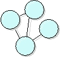

| Artefacto: Business Architectural Proof-of-Concept |
|  |
|
Objetivo
The purpose of the Business Architectural Proof-of-Concept is to determine whether there exists, or is likely to exist, a solution (or a set of solutions) that satisfies the architecturally-significant requirements. |
Relaciones
Personalización
| Opciones de representación | The Business Architectural Proof-of-Concept may take many forms, for example:
|
|---|
© Copyright IBM Corp. 1987, 2006. Reservados todos los derechos. |